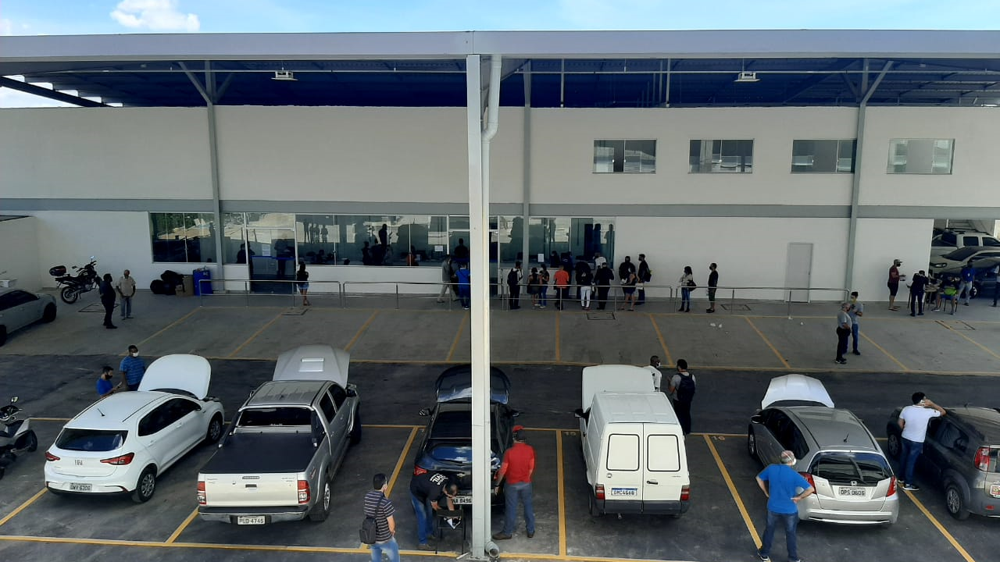

O Dentran de contagem que funcionava na avinida joão Gomes Caroso teve o seu fim no dia (1/3). Com novo fincionamento na Avenida Babitta Camargos no bairro Cidade industrial. Para realização de vistoria de veículo, a entrada é pela rua Osório de Morais, nº 600. No antigo endereço, proprietários de veículos e despachantes reclamavam das péssimas condições de conservação do prédio que há vários anos demandava reformas. Além das pichações e do mato alto, o muro de vigas de concreto que cercavam a antiga sede do Ciretran Contagem eram constantemente derrubados. A noite e nos finais de semana, o espaço servia de abrigo para moradores em situação de rua.
A Prefeitura de Contagem, na Grande BH, anunciou nesta sexta-feira (16/04) que o comércio não-essencial da cidade poderá reabrir a partir deste sábado (17/04). A flexibilização é reflexo do fim da onda roxa, do programa Minas Consciente, do governo estadual, na macrorregião Centro. As novas regras permitem que o comércio varejista de rua abra de 9h às 18h de segunda a sábado, enquanto shoppings podem funcionar de 10 às 20h, também de segunda a sábado. Bares e restaurantes podem funcionar até 20h, nos mesmos dias que os setores citados anteriormente. A abertura de casas de festas e feiras ainda está proibida.
Milhares de pessoas moram, trabalham e estudam nas regionais Ressaca e Nacional. Elas demandam mais de 600 mil viagens. Com a Ceasa Minas, um polo moveleiro, um shopping de grande porte, uma unidade do Centro Federal de Educação Tecnológica de Minas Gerais (Cefet-MG), e com os novos bairros da expansão imobiliária, foi preciso adequar o atendimento por parte da Transcon. O objetivo do novo sistema de transporte é integrar regiões que são motores de desenvolvimento do município: as regionais Ressaca e Nacional, com o Centro de Contagem e a Cidade Industrial. Com a redução do impacto nas vias, o trânsito da região central da cidade fluirá com menos congestionamento. O SIM, por meio do Corredor e Terminal Ressaca, está sustentado em três obras de infraestrutura, compatíveis com o fluxo de trânsito na região: Viaduto das Américas I, Viaduto das Américas II e o Viaduto da Ceasa Minas.